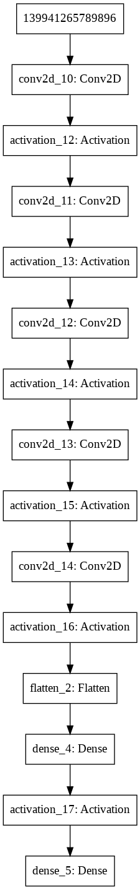

Double Deep Q-Learning解説
SourceCode
https://github.com/autorope/donkey_gym/blob/master/examples/reinforcement_learning/ddqn.py
Data
連続する80x80ピクセルの画像を4枚使用する。
Line37-Line39
1 2 3 | img_rows, img_cols = 80, 80 # Convert image into Black and white img_channels = 4 # We stack 4 frames |
Model

Line79-Line101
1 2 3 4 5 6 7 8 9 10 11 12 13 14 15 16 17 18 19 20 21 22 23 | def build_model(self): model = Sequential() model.add(Conv2D(24, (5, 5), strides=(2, 2), padding="same",input_shape=(img_rows,img_cols,img_channels))) #80*80*4 model.add(Activation('relu')) model.add(Conv2D(32, (5, 5), strides=(2, 2), padding="same")) model.add(Activation('relu')) model.add(Conv2D(64, (5, 5), strides=(2, 2), padding="same")) model.add(Activation('relu')) model.add(Conv2D(64, (3, 3), strides=(2, 2), padding="same")) model.add(Activation('relu')) model.add(Conv2D(64, (3, 3), strides=(1, 1), padding="same")) model.add(Activation('relu')) model.add(Flatten()) model.add(Dense(512)) model.add(Activation('relu')) # 15 categorical bins for Steering angles model.add(Dense(15, activation="linear")) adam = Adam(lr=self.learning_rate) model.compile(loss='mse',optimizer=adam) return model |
Gym
| 項目 | コード |
|---|---|
| gym | gym.make(args.env_name) |
| state_size | (img_rows, img_cols, img_channels) |
| action_space | env.action_space |
Line213-Line241
1 2 3 4 5 6 7 8 9 10 11 12 13 14 15 16 17 18 19 20 21 22 23 24 25 26 | def run_ddqn(args): ''' run a DDQN training session, or test it's result, with the donkey simulator ''' config = tf.ConfigProto() config.gpu_options.allow_growth = True sess = tf.Session(config=config) K.set_session(sess) #we pass arguments to the donkey_gym init via these os.environ['DONKEY_SIM_PATH'] = args.sim os.environ['DONKEY_SIM_PORT'] = str(args.port) os.environ['DONKEY_SIM_HEADLESS'] = str(args.headless) env = gym.make(args.env_name) #not working on windows... def signal_handler(signal, frame): print("catching ctrl+c") env.unwrapped.close() sys.exit(0) # Get size of state and action from environment state_size = (img_rows, img_cols, img_channels) action_space = env.action_space # Steering and Throttle |
Line244-Line269
throttoleは、Defaltで0.3に固定。env.reset()でEmulatorをReset。agent.process_image(obs)で、グレースケールの80x80の画像に変換。
1 2 3 4 5 6 7 8 9 10 11 12 13 14 15 16 17 18 19 20 21 22 23 24 25 | try: agent = DQNAgent(state_size, action_space, train=not args.test) throttle = args.throttle # Set throttle as constant value episodes = [] if os.path.exists(args.model): print("load the saved model") agent.load_model(args.model) for e in range(EPISODES): print("Episode: ", e) done = False obs = env.reset() episode_len = 0 x_t = agent.process_image(obs) s_t = np.stack((x_t,x_t,x_t,x_t),axis=2) # In Keras, need to reshape s_t = s_t.reshape(1, s_t.shape[0], s_t.shape[1], s_t.shape[2]) #1*80*80*4 |
Whileループは、Emulatorから車が脱線するとTrueの値が帰ってくるので、その間動き続ける。
| コード | 意味 |
|---|---|
| steering = agent.get_action(s_t) | steeringの値(ハンドル) |
| next_obs, reward, done, info = env.step(action) | エミュレータに[Steering,Throttle]を渡すと、その値で車が移動する、その結果のnext_obs(画像), reward(黄色線との距離), done(離脱していなければfalse), infoが返ってくる |
| agent.process_image(next_obs) | 取得した画像を80x80グレースケールに変換する |
| agent.replay_memory(s_t, np.argmax(linear_bin(steering)), reward, s_t1, done) | st_1(1つ前の4枚の連続する画像), ハンドルの角度のレンジ, reward(報酬), s_t1(新しい画像をいれた4枚の連続する画像) を渡す |
| agent.update_target_model() | 車が離脱したらself.target_model.set_weights(self.model.get_weights())でweightを更新する。 |
Line270-Line308
1 2 3 4 5 6 7 8 9 10 11 12 13 14 15 16 17 18 19 20 21 22 23 24 25 26 27 28 29 30 31 32 33 34 35 36 37 38 39 | while not done: # Get action for the current state and go one step in environment steering = agent.get_action(s_t) action = [steering, throttle] next_obs, reward, done, info = env.step(action) x_t1 = agent.process_image(next_obs) x_t1 = x_t1.reshape(1, x_t1.shape[0], x_t1.shape[1], 1) #1x80x80x1 s_t1 = np.append(x_t1, s_t[:, :, :, :3], axis=3) #1x80x80x4 # Save the sample <s, a, r, s'> to the replay memory agent.replay_memory(s_t, np.argmax(linear_bin(steering)), reward, s_t1, done) agent.update_epsilon() if agent.train: agent.train_replay() s_t = s_t1 agent.t = agent.t + 1 episode_len = episode_len + 1 if agent.t % 30 == 0: print("EPISODE", e, "TIMESTEP", agent.t,"/ ACTION", action, "/ REWARD", reward, "/ EPISODE LENGTH", episode_len, "/ Q_MAX " , agent.max_Q) if done: # Every episode update the target model to be same with model agent.update_target_model() episodes.append(e) # Save model for each episode if agent.train: agent.save_model(args.model) print("episode:", e, " memory length:", len(agent.memory), " epsilon:", agent.epsilon, " episode length:", episode_len) |